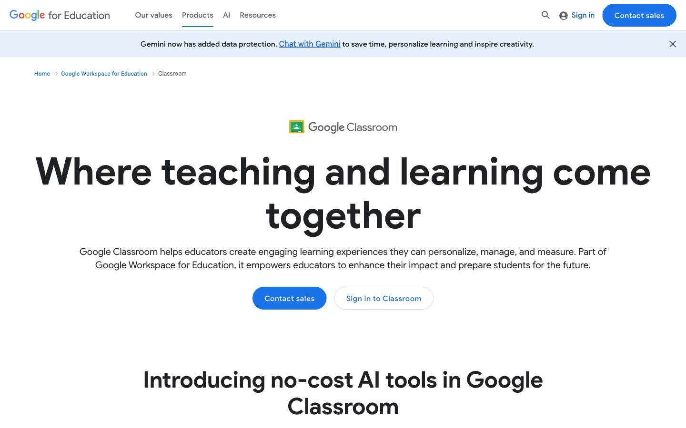

Google for Education 的 Design.md 主题展示，围绕教育服务、公共服务、浅色界面、AI组织页面。
Explore Google for Education's light Other design system: Classroom Blue #1a73e8, Educator Green #188038 colors, Google Sans Display, Google Sans Text...

#1a73e8: #1a73e8#188038: #188038#1967d2: #1967d2#f8f9fa: #f8f9fa#202124: #202124#3c4043: #3c4043#5f6368: #5f6368#dadce0: #dadce0#ffffff: #ffffff#e8f0fe: #e8f0fe#e6f4ea: #e6f4ea#fef9e7: #fef9e7display: Google Sans Displaybody: Google Sans Textmono: ui-monospacehints: Google Sans Display,Google Sans Text,ui-monospace